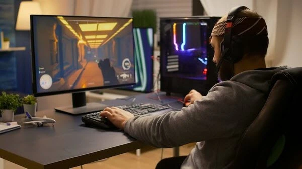

Programador
De maneira geral, um desenvolvedor de jogos ajuda a escrever e codificar o software para os games rodarem da melhor forma possível. Saiba o que você precisa estudar para ser um bom programador de jogos. Nesse sentido, o trabalho do desenvolvedor de jogos normalmente consiste em um trabalho de equipe colaborativa.
Game Designer
O profissional é responsável pela composição do jogo, portanto, o Designer de Games abrange os desafios da pré-produção, a programação do projeto, a criação do roteiro e dos personagens, além dos testes de execução do jogo. Vale destacar que a área de Design de Games está bastante ligada ao ramo do entretenimento.

